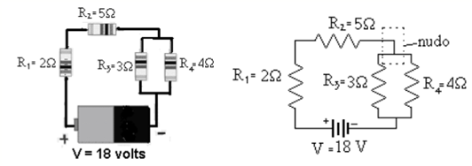
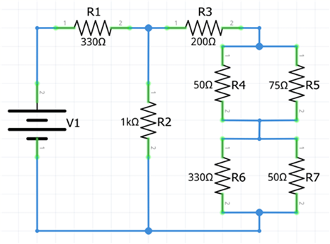
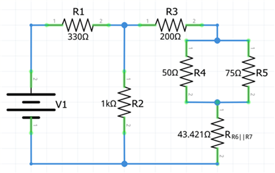
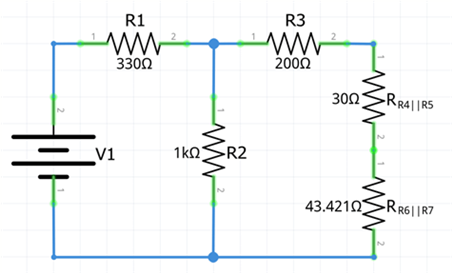
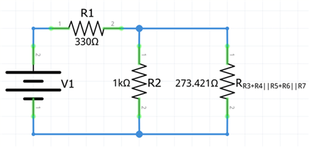
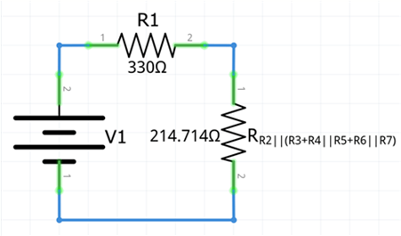

Circuitos eléctricos mixtosUn tercer tipo de circuito eléctrico es el circuito eléctrico en serie-paralelo, el cual esta formado por una mezcla de circuitos en serie y de circuitos en paralelo. Debido a que existe una infinidad de combinaciones de circuitos serie y paralelo, no se tienen fórmulas únicas para su solución.
Para su solución el método a utilizar es ir resolviendo los circuitos simples (aplicando las fórmulas que correspondan) e irlos sustituyendo por su resistencia equivalente, volver a resolver los nuevos circuitos simples formados, hasta que se obtenga una resistencia total.
Su representación es


Ejemplo 1. Reducir el siguiente circuito mixto a una sola resistencia equivalente.

Primero identificamos las partes del circuito que están conectadas en serie y las que están en paralelo para poder aplicar las reglas de serie y paralelo según sea necesario.
Comenzamos la reducción con las resistencias R6 y R7, que se encuentran conectadas en paralelo, su resistencia equivalente será (usar como subíndice los subíndices de las resistencias involucradas):
\(\displaystyle {R}_{67}=\frac{1}{\frac{1}{{R}_{6}}+\frac{1}{{R}_{7}}} \)
\(\displaystyle {R}_{67}=\frac{1}{\frac{1}{330}+\frac{1}{50}} \)
\(\displaystyle {R}_{67}=\frac{1}{0.00303+0.02} \)
\(\displaystyle {R}_{67}=\frac{1}{0.02303} \)
\(\displaystyle {R}_{67}=43.421\,ohm \)
Sustituimos el circuito formado por R6 y R7 y en su lugar colocamos la resistencia equivalente R67.

Ahora reducimos las resistencias R4 y R5 que también están en paralelo
\(\displaystyle {R}_{45}=\frac{1}{\frac{1}{{R}_{4}}+\frac{1}{{R}_{5}}} \)
\(\displaystyle {R}_{45}=\frac{1}{\frac{1}{50}+\frac{1}{75}} \)
\(\displaystyle {R}_{45}=\frac{1}{0.02+0.0133} \)
\(\displaystyle {R}_{45}=\frac{1}{0.03333} \)
\(\displaystyle {R}_{45}=30\,ohm \)
Sustituimos el circuito formado por R4 y R5 y en su lugar colocamos la resistencia equivalente R45

Ahora reducimos las resistencias R3, R45 y R67 que se encuentran conectadas en serie.
\(\displaystyle {R}_{34567}={R}_{3}+{R}_{45}+{R}_{67} \)
\(\displaystyle {R}_{34567}=200+30+43.421 \)
\(\displaystyle {R}_{34567}=273.421\,ohm \)
Sustituimos el circuito formado por R3, R45 y R67 y en su lugar colocamos la resistencia equivalente R34567

A continuación tenemos dos resistencias en paralelo, la resistencia R2 y la resistencia de R34567.
\(\displaystyle {R}_{234567}=\frac{1}{\frac{1}{{R}_{2}}+\frac{1}{{R}_{34567}}} \)
\(\displaystyle {R}_{234567}=\frac{1}{\frac{1}{1,000}+\frac{1}{273.421}} \)
\(\displaystyle {R}_{234567}=\frac{1}{0.001+0.0036573} \)
\(\displaystyle {R}_{234567}=\frac{1}{0.0046573} \)
\(\displaystyle {R}_{234567}=214.71\,ohm \)
Sustituimos el circuito formado por R2, y R34567 y en su lugar colocamos la resistencia equivalente R234567

Finalmente nos quedan dos resistencias en serie, la resistencia R1 y R234567 con las cuales calcularemos la resistencia total del circuito:
\(\displaystyle {R}_{T}={R}_{1}+{R}_{234567} \)
\(\displaystyle {R}_{T}=330+214.714 \)
\(\displaystyle {R}_{T}=544.714\,ohm \)
Recursos adicionales
Haz click en el siguiente enlace para ver tutoriales relacionados con el tema.